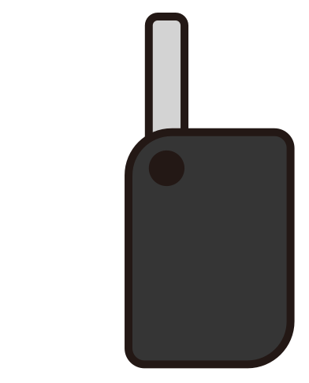

<!DOCTYPE html>
<html lang="en">
  <head>
    <meta charset="UTF-8" />
    <meta name="viewport" content="width=device-width, initial-scale=1.0" />
    <title>Document</title>
    <style>
      .hand {
        width: 200px;
        left: 400px;
        top: 100px;
        position: absolute;
      }
      .key {
        width: 150px;
        left: 100px;
        top: 50px;
        position: absolute;
        transition: 1s;
      }
    </style>
  </head>
  <body>
    
    <!--  -->
    <object class="key" data="images/key.svg" type="image/svg+xml"></object>

    <script>
      const hand = document.querySelector(".hand");
      const key = document.querySelector(".key");
      let isKeyInHand = false;

      hand.addEventListener("click", () => {
        if (isKeyInHand) {
          key.style.transform = `scale(1) translate(0, 0)`;
        } else {
          // getBoundClinetRect => 브라우저에서 특정 요소의 크기와 뷰포트 기준 위치를 반환하는 메서드이다.
          const handRect = hand.getBoundingClientRect();
          const leftPosition = handRect.left + 150;
          const topPosition = handRect.top - 60;
          key.style.transform = `scale(0.5) translate(${leftPosition}px, ${topPosition}px)`;
        }
      });

      key.addEventListener("transitionend", () => {
        isKeyInHand = !isKeyInHand;
      });
    </script>
  </body>
</html>
